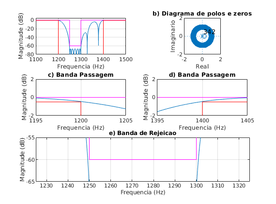
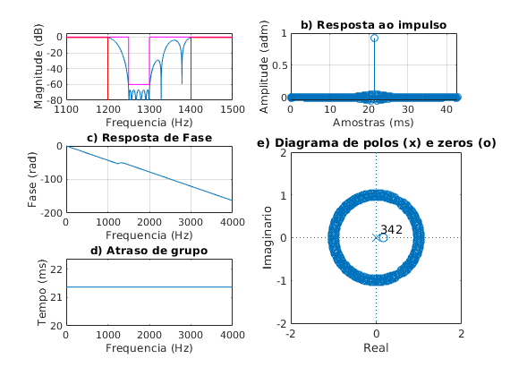

Contents
close all;
clear all;
clc;
ExecutarAjuste = 1;
Especificacoes
Ap = 0.5; As = 60; GdB = 0;
fa = 8000;
fp1 = 1200; fp2 = 1400;
fs1 = 1250; fs2 = 1300;
fcuts = [fp1 fs1 fs2 fp2];
w = fcuts/fa*(2*pi);
wp1 = w(1)/pi; ws1 = w(2)/pi; ws2 = w(3)/pi; wp2 = w(4)/pi;
mags = [1 0 1];
devs_As = 10^(-As/20);
devs_Ap = 1-10^(-Ap/20);
devs = [devs_Ap devs_As devs_Ap];
G0 = GdB;
if ExecutarAjuste
G0 = G0 - 0.23;
end
[n,f0,a0,w0] = firpmord(fcuts,mags,devs,fa);
h_pm = firpm(n,f0,a0,w0);
h_pm = h_pm*10^(G0/20);
figure(1)
subplot(321)
title('Resposta de magnitude')
[h, w] = freqz(h_pm, 1, linspace(0,pi,100000));
plot(w*fa/2/pi,20*log10(abs(h))); grid on;
title('Resposta de Frequencia')
xlim([1000 1500]); ylim([-80 10]);
hold on;
Amin = 80;
plot([0, ws1, ws1, ws2, ws2, 1]*fa/2, [0, 0, -As, -As, 0,0], '-m')
plot([0, wp1, wp1, wp2, wp2, 1]*fa/2, [-Ap, -Ap, -120, -120, -Ap, -Ap], '-r')
subplot(322)
zplane(h_pm, 1); axis([-2 2 -2 2]);
title('Diagrama de polos e zeros')
subplot(3,2,3)
plot(w*fa/2/pi,20*log10(abs(h))); grid on;
title('Banda Passagem')
grid on; hold on;
plot([0, ws1, ws1, ws2, ws2, 1]*fa/2, [0, 0, -As, -As, 0,0], '-m')
plot([0, wp1, wp1, wp2, wp2, 1]*fa/2, [-Ap, -Ap, -120, -120, -Ap, -Ap], '-r')
xlim([1050 1275]); ylim([-140 10]);
subplot(3,2,4)
plot(w*fa/2/pi,20*log10(abs(h))); grid on;
title('Banda Passagem')
grid on; hold on;
plot([0, ws1, ws1, ws2, ws2, 1]*fa/2, [0, 0, -As, -As, 0,0], '-m')
plot([0, wp1, wp1, wp2, wp2, 1]*fa/2, [-Ap, -Ap, -120, -120, -Ap, -Ap], '-r')
xlim([1275 1500]); ylim([-140 10]);
subplot(3,2,5:6)
plot(w*fa/2/pi,20*log10(abs(h))); grid on;
title('Banda de Rejei����o')
grid on; hold on;
plot([0, ws1, ws1, ws2, ws2, 1]*fa/2, [0, 0, -As, -As, 0,0], '-m')
plot([0, wp1, wp1, wp2, wp2, 1]*fa/2, [-Ap, -Ap, -120, -120, -Ap, -Ap], '-r')
xlim([1180 1420]); ylim([-140 10]);

figure(2)
escala = fa/2;
subplot(3,2,[4 6])
zplane(h_pm, 1);
axis([-2 2 -2 2])
title('Diagrama de polos (x) e zeros (o)')
clear h w
[h, w] = freqz(h_pm, 1, 'whole');
subplot(322)
stem(h_pm), grid on;
title('Resposta ao impulso')
subplot(321)
title('Resposta de Frequencia')
[h, w] = freqz(h_pm, 1, linspace(0,pi,100000));
plot(w*fa/2/pi,20*log10(abs(h))); grid on;
title('Resposta de Frequencia')
xlim([1000 1500]); ylim([-80 10]);
grid on; hold on;
Amin = 80;
plot([0, ws1, ws1, ws2, ws2, 1]*fa/2, [0, 0, -As, -As, 0,0], '-m')
plot([0, wp1, wp1, wp2, wp2, 1]*fa/2, [-Ap, -Ap, -120, -120, -Ap, -Ap], '-r')
xlim([0 fa/2])
subplot(323)
plot(w/pi*escala, unwrap(angle(h))/pi); grid on;
title('Resposta de Fase')
subplot(325)
grpdelay(h_pm, 1)
title('Atraso de grupo')
